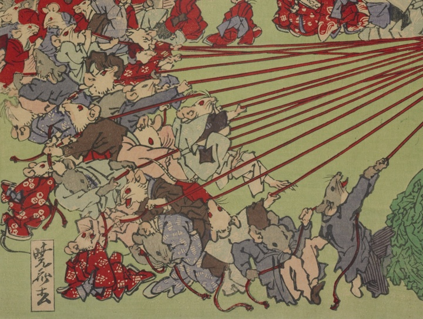

大黒天が持っているくじの紐を強く引っ張る鼠たち。着物などを着ている。
著作者：河鍋暁斎／出典：親書誌：U426_nichibunken_0474：新板大黒天福引之圖；シンパンダイコクテンフクビキ ノ ズ／日付：2025／資源識別子：U426_nichibunken_0474_0001_0000
Copyright (c)2010- International Research Center for Japanese Studies, Kyoto, Japan. All rights reserved.